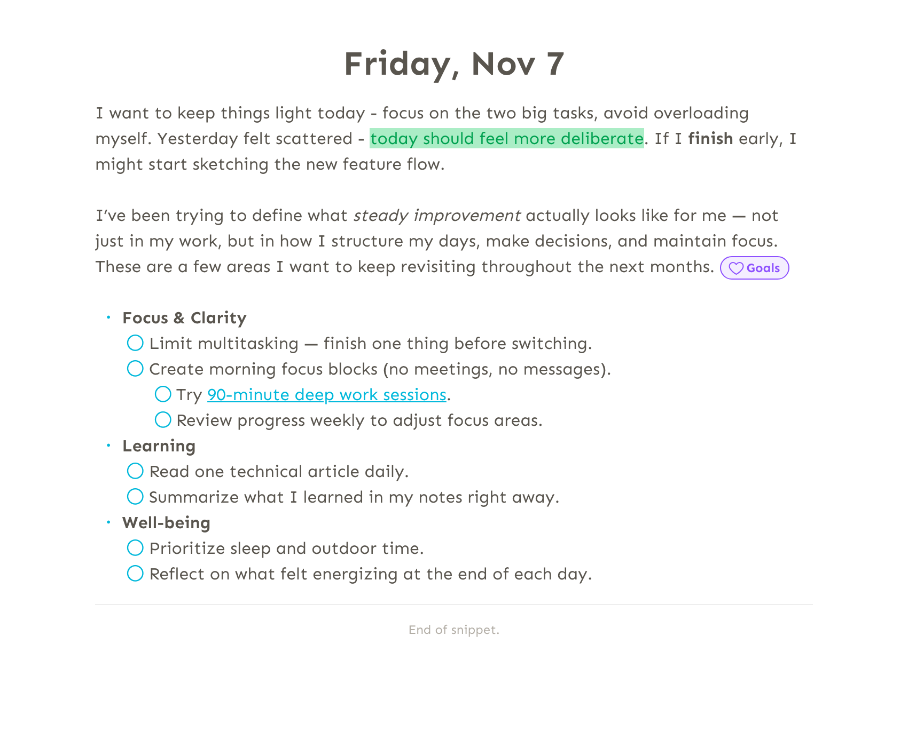

Rich text
Everything starts with text. Snippets gives it the attention it deserves — with a rich-text editor that stays out of your way and simply works.
No clumsy block-based layouts, no formatting that traps you as you write, no jumpy markdown quirks. Made with utmost precision, for a writing experience we think you’ll love.
Meet your new editor